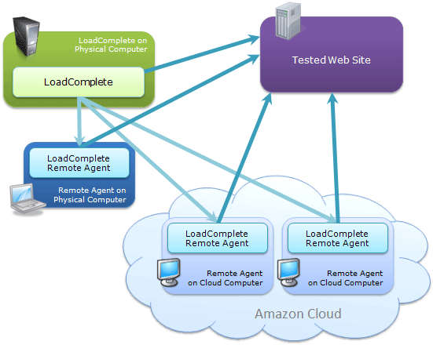
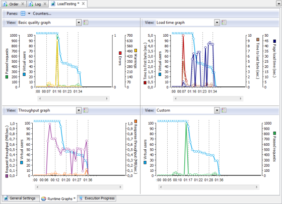
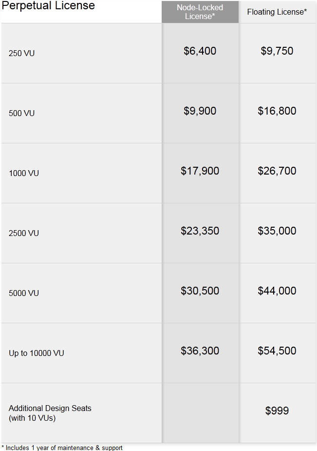
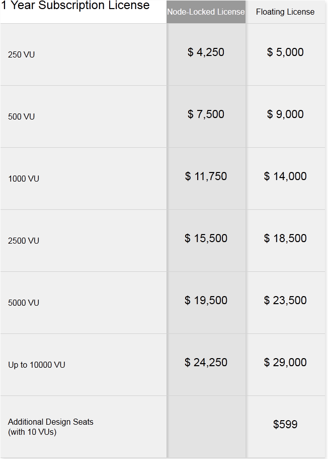

A type of performance testing conducted to evaluate the behavior of a
component or system with increasing load, e.g. numbers of parallel users and/or numbers
of transactions, to determine what load can be handled by the component or system.
ISTQB
What is LoadComplete?
a performance, stress and load testing tool
can record user scenarios
can generate load on premise or from the cloud
collect server performance data to include in reports
supported technologies: AJAX, ASP.NET, Flash and Silverlight
Scenario Recording and Playback
record actions in web browser or another web client application
different scenarios across virtual user groups to simulate various visitor types
configurable workload profiles
customizable user connection characteristics
all traffic is recorded into scenarios
Load Modeling for Performance Testing
specify the number of virtual users to be simulated
parameterize tests with external data
customizable think time
customizable browser and connection characteristics
flexible workload
Cloud Load Testing with LoadComplete

generate a realistic load of a large number of users from various geographic locations
Amazon EC2® integration
Amazon machine images specially preconfigured for running load tests
Server Performance Monitoring

real-time server monitoring
Client-side metrics: response time, page load time, time to first byte (TTFB), time to last byte (TTLF)
Windows, Apache and Unix server-side performance counters: CPU and memory usage, disk throughput, network throughput
System Specifications
Supported Operating Systems:
Windows 7 (both 32-bit and 64-bit editions)
Windows Vista (both 32-bit and 64-bit editions)
Windows Server 2008 (both 32-bit and 64-bit editions)
Windows Server 2008 R2
Windows XP Service Pack 3 (both 32-bit and 64-bit editions)
Windows Server 2003 (both 32-bit and 64-bit editions)
System Specifications:
Installation Requirements:
Intel Pentium 4 2 GHz or higher
1GB of RAM
700 MB hard disk space + 200 MB of free space
IE 7 or later
Adobe Flash Player for viewing
Pricing Overview


Licensing Models
Node-Locked License
allows using a single instance of LoadComplete on a particular computer
directly bound to that computer
Floating User License
can be used by a group of users
installed on any number of computers in the network